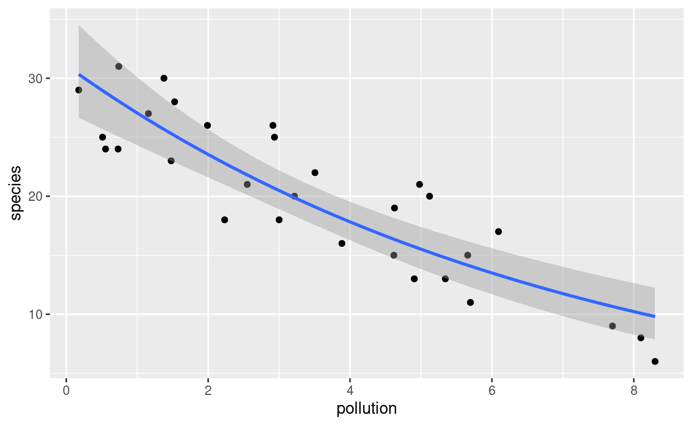
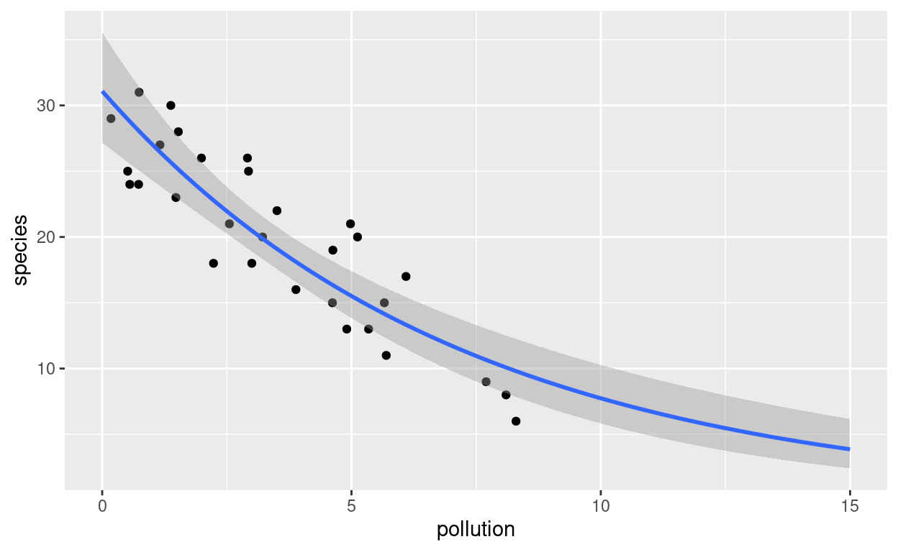
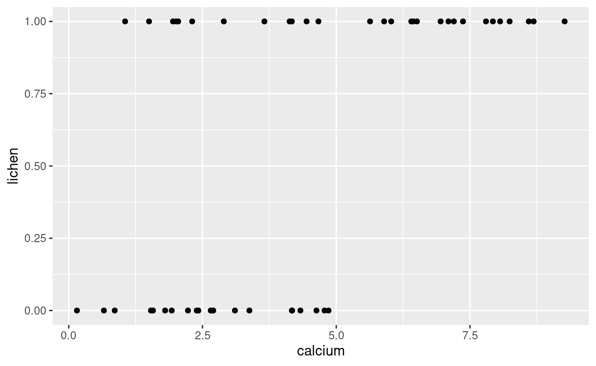
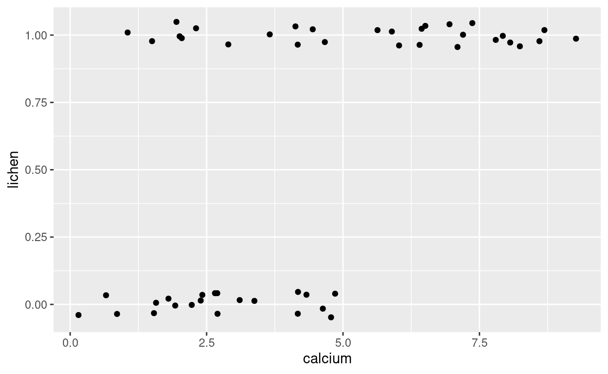
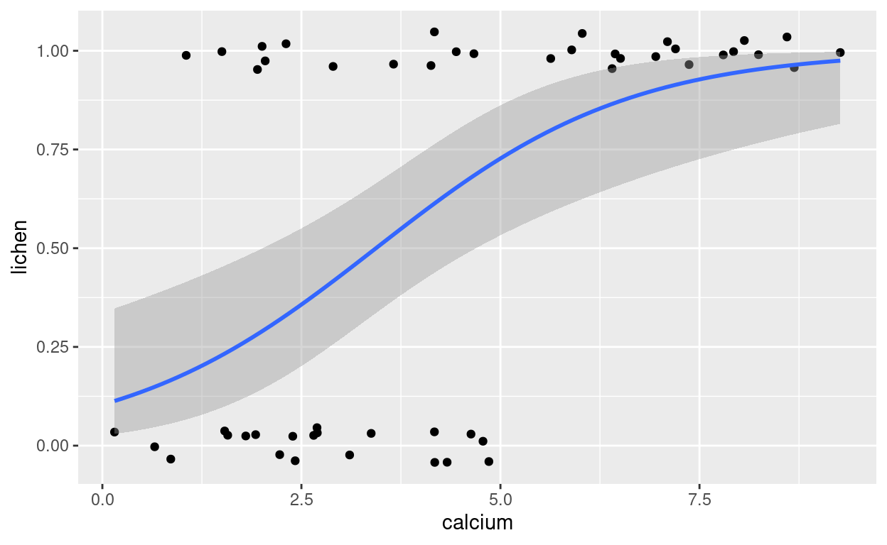

Introduction
Linear models
In the last two weeks, we have been looking at linear models using
lm(). The response data you’ve looked at has been
continuous numerical data, potentially with decimal points.
Data types
Your response variable may not always be a continuous numerical one. In biology you may be dealing with the numbers of birds in a wood (whole numbers), percentage of crop damage by a pathogen (bounded 0 to 100) or dead/alive (categorical data). Thinking about your data type allows you to improve your standard linear model with a “generalised” linear model that can cope with these types of responses:
- Continuous data
- These could be positive or negative, and include decimal points, 2.45, 5.01, -3.78, 2.00. Examples might include temperate (degrees Centigrade).
- Whole number data, bounded by zero
- These are often count data, 4, 12, 0, 234. Examples might include the number of hedgehogs seen at a site.
- Proportion or percentage data, 0 to 1, or 0 to 100
- These values can have decimals, but are bounded between 0 and 1 (or 0 and 100 for percentages). Usually analysed as proportions. 0.23, 0.15, 0.98 etc. Can arise in lots of experiments, e.g. proportion of insects killed by a new pesticide
- Binary categorical data
- Two categories present, often coded as 0 or 1. Again wide occurrence in biology: dead/alive, present/absent, resistant/susceptible etc.
Assumptions of linear model
Linear models assume that our response is a continuous numerical variable, and the model produces normally-distributed residuals with homogeneity of variance. Continuous numerical data can take any value, could be either positive and negative and run from -infinity to +infinity. Thus our model is of the form:
\(\text{Response variable} = \text{Explanatory variable(s)} + Error\)
and when your response is a continuous numerical variable then it is assumed that a histogram of your errors would produce a normal (Gaussian) or bell-shaped curve.
Three key types of error distribution
When we move from a linear model to using a GLM, we will need to think about changing the distribution we use or are assuming from our data. If we undertake a GLM using a Gaussian distribution this is very similar to just doing a linear model. The reason to switch to a GLM is because it allows us to work in a generalised framework with other distributions. The two other distributions you are most likely to need as biologists are the Poisson distribution for counts named after Simeon Poisson (French mathematician), and the Binomial distribution for proportion 1/0 or presence/absence data (no-one seems to have claimed credit for this one!).
- Gaussian (normal) distribution: classic bell-shaped curve, used for continuous response
- Poisson distribution: whole number count response
- Binomial distribution: proportion or a binary categorical response
Generalised linear models
These are an extension of the standard linear model that you have
already used. They are called with the glm() function, and
can handle Gaussian, Poisson and Binomial error distributions. Before we
look in detail at how glm() work, we will refresh our
memory on the Gaussian (normal) distribution, and introduce the Poisson
and Binomial distributions using interactive controls.
Let’s have a quick look at all three distributions and hopefully this will become clearer.
Normal distribution
This statistical distribution is named after a 19th Century German mathematician, Friederick Gauss. There are two ‘parameters’ to a normal distribution, the mean and the standard deviation. Conveniently, 95% of the data will fall within + or - 1.96 (i.e. approximately 2) standard deviations.
The interactive tool below will let you change the mean and the standard deviation so you can see how these two parameters alter the position along the x-axis and shape of the normal distribution alogn the x- and y-axes. The blue line represents a fitted curve over the histogram according to the Gaussian distribution which will help you visualise the bell-shape.
The normal (Gaussian) distribution
Comments You should have seen the following changes to the plot when you adjusted the mean and standard deviation:
- as you increase or decrease the mean, the distribution moves to the left or the right, but remains roughly the same shape
- a low standard deviation results in the values being packed together while a high standard deviation flattens and spreads the curve
Poisson distribution
Often biologists and ecologists collect data in the form of counts e.g. the number of birds in wood, or number of bacterial colonies on a Petri dish. These numbers are whole numbers or integers and cannot be negative values or have decimal points. This means that our distribution cannot include numbers less than zero. The Poisson distribution allows us to model count data. It takes a parameter \(\lambda\) (Greek letter lambda) which adjusts the shape of this distribution. Try mvoing the the interactive slider left and right to see what happens to the size and shape of the distribution:
The Poisson distribution for whole-number counts
You should have seen the following things happen to the distribution when you moved the slider:
- When \(\lambda\) is high, you’ll see that the Poisson distribution looks fairly similar to a normal distribution, except with whole numbers. However as \(\lambda\) gets smaller, the distribution gets squashed to the left, as it cannot have any values below zero.
- The histogram is shown slightly differently, as we are dealing with whole number counts.
Binomial distribution
There are times when you will collect data that has a binary response. This could be:
- dead / alive
- present / absent
- true / false
- proportion or percentage data
The main parameter is the probability of “success” on each “trial”. So if you toss a (fair) coin your probability of a head should be 0.5. You might do an experiment where you have 25 replicates, in each of which you try and germinate 10 seeds. The “size” of each replicate is 10, and you would have a count of the numbers of seeds germinated or failed in each replicate.
Below, we have the simplest setup, 25 replicates, with each of size one (which produces a very simple plot). Adjust the size of each replicate, which is equivalent to the number of seeds per replicate in the example above, and the probability of success, equivalent to the probability of germination.
In the interactive demonstration below, we have the simplest setup, 25 replicates, with each of size one (which produces a very simple plot). Before you adjust the sliders, the sample size is only 1 (e.g. one seed per) replicate, and the probability (of germination) is 0.5. Therefore roughly half of your 25 replicates will fall into the 0 (no germination) category, and half into the 1.0 (germination) category. Adjust the size of each replicate, which is equivalent to the number of seeds per replicate in this example, and the probability of success, equivalent to the probability of germination.
The binomial distribution
You should have observed the following:
- As you increase the number of seeds per replicate (maximum of 50) you will see additional whole numbers appearing on the horizontal axis, representing the numbers of successes (e.g. germinating seeds)
- the total of all the vertical axes is always 25, which is the total number of replicates in this example.
How to generalise
How do generalised linear models extend the standard linear model?
You have already come across the basic syntax for linear models of:
\[Response = \text{Explanatory variable(s)} + Error\] where your explanatory variables are typically treatments, or environmental measures, and your \(Error\) is unknown variation or noise. A linear model assumes that the \(Error\) is normally distributed. This makes it relatively simple to make a link from predictions calculated from your explanatory variable(s) to your response.
Take a simple example, such as a ‘regression’ linear model, where you have a continuous response variable \(y\) and a continuous explanatory variable \(x\). The form of the model can then be expressed as:
\[y = a + b.x + \epsilon\]
Where
- \(y\) = response variable, measured on a continuous scale (decimals allowed)
- \(x\) = explanatory variable, in a regression this is continuous
- \(a\) = intercept (where the fitted regression line crosses the vertical axis)
- \(b\) = gradient of fitted line
- \(\epsilon\) = unknown variation or noise in your data
When you create a linear model, the lm() function
estimates the intercept and slope parameters, to predict the response
values as accurately as possible. The above equation is often written
as:
\[y = \beta_0 + \beta_1x + \epsilon\] where
- \(\beta_0\) = intercept
- \(\beta_1\) = slope
This second style of writing has the advantage that it can be extended to multiple explanatory variables, that might be continuous, and/or categorical.
\[y = \sum_{j=1}^{p} \beta_jx_j + \epsilon\] where
- \(p\) = the number of explanatory variables
- \(j\) = a counter
- \(\sum\) = Greek letter Epsilon which indicates to go through each of the next calculations and add the results together
- \(\beta_jx_j\) = multiply parameter. e.g. in the simple regression example we only have two parameters (\(p = 2\)): \(\beta_0\) the intercept (which is multipled by 1.0) and \(\beta_1\) the slope, which is multiplied by the explanatory variable \(x_1\).
The need for a link function
I mentioned in passing that we need to make our predictions and link them back to the explanatory variable. This is straightforward if we have a normal (Gaussian) distribution, but is complex for Binomial, Poisson and other distributions. Therefore in a generalised linear model or GLM, we calculate an intermediate value, which is then “linked” back to the response variable. We call this intermediate variable \(\eta\) (Greek letter eta). So our equation now becomes:
\[\eta = \sum_{j=1}^{p} \beta_jx_j + \epsilon\]
How to link back to the response
How do we then calculate \[y = \eta\] There are 3 link functions which we need to know about, for now, which relate to the 3 distributions we have been through:
- identity = when we need to use a normal (Gaussian) distribution. This is used with the linear models we have already discussed earlier in this course. No transformation needed to convert \(\eta\) to \(y\).
- log link = when we need to use a Poisson distribution and we have count data. This uses natural logs rather than logs to base 10 to model the response variable.
- logit link = when we need to use a binomial distribution and our response variable is binary. This is a little more complex, but R sets it automatically.
Fortunately, R’s glm() function automatically picks the
correct transformation for the link function.
Do I need to worry about this?
On a day-to-day basis, no (which is why I have avoided too many equations)! But it does have a few impacts that you should be alert to, that we will discuss as we work through examples:
- Least squares no longer used. The method for estimating the parameters changes from sums of squares etc. to a technique called ‘maximum likelihood’. Instead of t-statistics for each parameter, you will see z-statistics displayed.
- You will no longer see an R-squared value. Instead, something called
the Akaike Information Criterion (AIC) will show for each
glm()model. The lower the AIC the better. - Instead of sums of squares (SS) the
glm()produces a deviance which can be thought of as a ‘generalised’ SS. - If making predictions for new data based on Poisson or Binomial errors, you need an extra step to account for the link function.
The output looks different - why?
When you use glm() rather than lm() you’ll
notice your model summary() is displayed slightly
differently. That is because glm() uses something called
“maximum-likelihood” when estimating parameters. You don’t need to know
the complex mathematics behind this (phew!) but there is a very
accessible description of the basic at Getting
Started with R: introduction for biologists Chapter 7.
GLM with count data
What goes wrong with lm()?
We’ll begin by looking at a simple example of the numbers of species of aquatic invertebrates in rivers with different levels of pollution. Aquatic invertebrates can be very sensitive to water pollution, and are useful bio-indicators of pollution events etc.

An advanced system has now been developed by the Centre for Ecology and Hydrology that is used by the Envionment Agency to assess river quality, called RIVPACS. We will, however, just look at a simple set of species counts and pollution.
The data are in a data.frame called sppcount. Begin by
creating a scatterplot of the data, run a linear model, examine its
summary table, and look at the plots of residuals and QQ plot.
Hints: Use gf_point() for the scatterplot,
for the lm() make sure you have your response and
explanatory variables the right way round. Use
mplot(spp_count_lm, which=1:2) to check diagnostic the
residuals and QQ plots with ggplot2 graphs or
plot(spp_count_lm, which=1:2 for basic graphs.
# Create scatterplot
gf_point(species ~ pollution, data=sppcount)
# Create linear model, check coefficients and R-squared
sppcount_lm <- lm(species~pollution, data=sppcount)
summary(sppcount_lm)
# Display first two diagnostic plots
mplot(sppcount_lm, which=1:2)At first site the linear model looks quite good, with a highly significant negative effect of pollution on the count of species, and the model explains almost 80% of the variation. However, there are two clues that something is amiss:
- The QQ plot has a distinct S-shape to it
- What is the species count at high levels of pollution.
We can check the latter by plotting the fitted line onto our
scatterplot, and we can also calculate a predicted number of species for
a given amount of water pollution. As this is a linear
model the line function does not do anything, so we can use the
simple predict() function to obtain a predicted spp
count.
In the box below, create a scatterplot with the fitted line, and
check the number of species at a pollution level of about 15. You can
extend the range of your x-axis in your plot by adding the
gf_lim(x = c(0, 15)) option.
sppcount_lm <- lm(species ~ pollution, data = sppcount)gf_point(species ~ pollution, data = sppcount) %>%
gf_lims(x = c(0, 15)) %>%
gf_lm()We have a problem. From roughly pollution=12.5 onwards we are getting negative numbers of species, which obviously cannot happen. To solve the problem, we’ll repeat the analysis, but as a generalised linear model.
Correct analysis with glm() function
Now let’s analyse these using GLM instead using the correct distribution and link function. R will automatically pick the correct transformation for the link function but we will state it explicitly to help you connect the statistical distribution to the appropriate link function. You will also see where you would need to state it when writing the R code. We need to alter slightly what we put into the model:
glm(response ~ explanatory, family = distribution(link ="X"), data = data_set)
You can see an extra term in the model which is family =
that relates to the distribution we will be using and specifies the link
function. Since we are using count data, the correct distribution we
will need to use is the Poisson distribution and the link function will
be log. Thinking about the linear model which you just created, simply
replace your original lm() function with glm()
and add family = poisson(link = "log"). Again display the
model summary() and diagnostic plots via
plot().
# Create scatterplot
gf_point(species ~ pollution, data=sppcount)
# Create linear model, check coefficients and R-squared
sppcount_glm <- glm(species~pollution, family = poisson(link = "log"), data=sppcount)
summary(sppcount_glm)
# Display first two diagnostic plots
mplot(sppcount_glm, which=1:2)Key points from output of glm()
model
- The summary table again shows pollution as significant. Instead of an R-squared value there is an AIC. When comparing models the lower the AIC the better.
- The QQ plot has an S-shaped curve, but this is less than before:
compare the range of values on the y-axis of the QQ plot for the
lm()andglm()
Writing up the results
The output from your summary is slightly different from
lm(). To write the above model up I would write something
similar to “There was a significant negative effect of pollution on
species richness (AIC = 163.76, z = -7.165, p < 0.001)”. Several
schema are acceptable for reporting GLMs, but this is probably the most
common.
Adding the correct fitted line
You’ll recall that GLMs use link functions to
connect the response data to the explanatories, that account for the
appropriate characteristics of the response data. Where the response
data are continuous and lm() can be used, the link function
does not do anything, hence it is known as the “identity”. However, for
Posson (and binomial) distributions, we need to take this into
account.
Poisson (count) distributions use the log-link. We could therefore
take the antilog of our predictions to get back to the values for our
fitted line. Since the glm() uses natural logarithms, often
shown as \(ln\) or \(log_e\), the antilog is the exponent. Hence
\(ln(x)\) is \(e^x\). R has the function
exp() to take the antilogarithm.
However, this is a little complex to implement, so we are going to
use a slightly easier method, based on the mosaic package.
The mosaic package’s default plotModel()
function will allow you to see the GLM model and original points:
sppcount_glm <- glm(species~pollution, family = "poisson", data=sppcount)
gf_point(species~pollution, data=sppcount) %>%
gf_smooth(method = "glm", method.args = list(family="poisson"), se=TRUE)
To see what happens when we extend the x-axis to 15.0 (which you
recall gave negative species counts with the
lm() model, we can extend the limits of the x-axis).
gf_point(species~pollution, data=sppcount) %>%
gf_lims(x = c(0, 15)) %>%
gf_smooth(method="glm", method.args = list(family="poisson"), fullrange=TRUE, se=TRUE)
The above code is a little more complex. We use
gf_smooth() to add the predicted model curve, with
arguments to explain that a GLM with Poisson distribution should be
used. The fullrange=TRUE forces the fitted line to go
beyond the range of the data. This extrapolation is
NOT normally recommended (you can see the SE bars are
bigger at the ends of the line). However, I have done it here just to
demonstrate that the predicted number of species no longer drops to
unrealistic negative values.
Making a prediction for a specific value of water pollution
Suppose you want to make a prediction of the expected number of
species when the pollution is at 3.64 mg/l. This can be easily done by
creating a model function from your glm
using the makeFun() command, and then giving it a
number:
sppcount_glm <- glm(species~pollution, family = "poisson", data=sppcount)
sppcount_fit <- makeFun(sppcount_glm)
sppcount_fit(pollution = 3.64)## 1
## 18.73928Don’t worry that the predicted value includes decimal points; this is quite acceptable in a GLM. It is how you set it up originally that matters. If you want, you can calculate the Standard Error (SE) of your predicted value:
sppcount_glm <- glm(species~pollution, family = "poisson", data=sppcount)
sppcount_fit <- makeFun(sppcount_glm)
sppcount_fit(pollution = 3.64, se.fit=TRUE)## $fit
## 1
## 18.73928
##
## $se.fit
## 1
## 0.8181217
##
## $residual.scale
## [1] 1GLM with binary data
You will often have data in the form of dead/alive, present/absence, or 0/1 and these can be analysed with a GLM with binomial errors. You will often see this type of analysis described as a logistic regression in textbooks, and it typically produces an S-shaped curve, rising or falling depending on your dataset, rather than a straight line.
Lichen presence or absence
Lichens are very sensitive to air pollution, and are another type of bioindicator. The presence or absence of lichens on trees is a good indication of the amount of atmospheric pollution.

However, their incidence is also affected by the pH of the bark of the tree on which they might grow. Therefore this dataset includes not only the amount of air pollution, but also the calcium content in the bark:
summary(lichens_dat)## lichen calcium airpoll
## Min. :0.00 Min. :0.153 Min. :2.023
## 1st Qu.:0.00 1st Qu.:2.248 1st Qu.:4.823
## Median :1.00 Median :4.170 Median :5.801
## Mean :0.58 Mean :4.319 Mean :5.856
## 3rd Qu.:1.00 3rd Qu.:6.431 3rd Qu.:7.191
## Max. :1.00 Max. :9.269 Max. :9.577head(lichens_dat)Visualising the data
In general, it is useful to quickly visualise the data before you
analyse them. A good summary is a boxplot, but by default that would put
our response variable on the horizontal axis. By default the
gf_boxplot() function expects a continuous variable to the
left of the ~ sign, and a categorical one on the right.
However, we can rotate the boxplot on its side using the
gf_refine(coord_flip()) option.
# Create a factor for the lichen presence/absence
lichens_dat$lichen_fct <- as.factor(lichens_dat$lichen)
summary(lichens_dat) # lichen_fct presence/absence now scores as 0/1 factor
gf_boxplot(calcium ~ lichen_fct, data=lichens_dat) %>%
gf_refine(coord_flip()) # Flips horizontally. Note double-bracketIn the R code box below, create a boxplot for the air pollution. Try
improving your graph by changing the title of the lichen axis to
“Presence or absence of lichens”, and change “airpoll” to read “Air
pollution”. Hint: Use the gf_labs()
function to give a customised label; the x= and
y= options operate before you flip the
boxplot.
lichens_dat$lichen_fct <- as.factor(lichens_dat$lichen)
gf_boxplot(airpoll ~ lichen_fct, data=lichens_dat) %>%
gf_labs(x = "Presence or absence of lichen", y = "Air pollution") %>%
gf_refine(coord_flip())Setting up a binomial GLM
The boxplots suggest that lichens are more abundant at high calcium and low air pollution. The GLM model is actually going to try and fit a curve to data of this form:
# As the GLM will predict a probability between 0 and 1, we will use the original
# lichen variable as the response, not the categorical lichen_fct
gf_point(lichen ~ calcium, data=lichens_dat)
Note: if you have a lot of data, and the points
overlap too much to view clearly, it can be useful to show them as
‘jittered points’ using gf_jitter()
# The height option controls how much 'jitter' occurs
gf_jitter(lichen ~ calcium, data=lichens_dat, height=0.05)
We can now create the binomial GLM, using the two ‘main effects’ of
calcium and airpoll, and also the interaction
term. Remember that the summary table shows deviance and AIC.
lichen_glm1 <- glm(lichen ~ calcium + airpoll + calcium:airpoll, family=binomial(link = "logit"), data=lichens_dat)
summary(lichen_glm1)##
## Call:
## glm(formula = lichen ~ calcium + airpoll + calcium:airpoll, family = binomial(link = "logit"),
## data = lichens_dat)
##
## Deviance Residuals:
## Min 1Q Median 3Q Max
## -1.84481 -0.33295 0.02027 0.34581 2.01591
##
## Coefficients:
## Estimate Std. Error z value Pr(>|z|)
## (Intercept) 4.0313 7.1747 0.562 0.574
## calcium 1.3807 2.1373 0.646 0.518
## airpoll -0.9422 1.1689 -0.806 0.420
## calcium:airpoll -0.1291 0.3389 -0.381 0.703
##
## (Dispersion parameter for binomial family taken to be 1)
##
## Null deviance: 68.029 on 49 degrees of freedom
## Residual deviance: 28.252 on 46 degrees of freedom
## AIC: 36.252
##
## Number of Fisher Scoring iterations: 7Let’s create a simpler model.
On the basis of your answer above, create a simpler model called
lichen_glm2 and look at the summary:
lichen_glm2 <- glm(lichen ~ calcium + airpoll, family=binomial(link = "logit"), data=lichens_dat)
summary(lichen_glm2)We can compare two GLM models using the anova()
function, with the option that the test="Chi". This does
what is known as a likelihood-ratio test. If there is no significant
difference in the models, you go for the one with the lower AIC.
anova(lichen_glm1, lichen_glm2, test="Chi")You can see that there is no statistical difference in the p-value for the comparison of the two models. You should select the simpler model, which does not have the interaction term.
Predicted values
The coefficient estimates shown in the
summary(lichen_glm2) table are in
logits. Recall the explanation of the
link function that is used in GLMs:
- Gaussian (normal) distribution with continuous response = identity Link = no different from a conventional linear model.
- Poisson distribution with count data = log link = take natural
logarithms when analysing by GLM, and exponents,
exp()function, to get back to original units. - Binomial distribution with presence/absence or proportion = take logits to analyse in the GLM, and ‘anti-logits’ to get back to original units.
So what are these mysterious “logits”? Logits are the natural logarithm of odds, and odds are the ratio of successes to failures (or presences to absences etc.). Therefore manually calculating your predicted values is quite complicated, as you have to convert your estimates back from the original logits. Fortunately (phew!) R will do this for you automatically, and you can easily view your model predictions.
We can use the makeFun() command to create a function
from our GLM that can be used to create predictions in the correct units
(a probability between 0 and 1.0) either for a given amount of
calcium and airpoll:
# Create a prediction function from our best GLM
lichen_fit <- makeFun(lichen_glm2)
# What is the predicted probability of lichen being present at calcium of 2 and
# air pollution of 5?
lichen_fit(calcium=2, airpoll=5)## 1
## 0.7197867Adding the fitted line
If we want to create a plot with the curve for the predicted
probability across a range of calcium values, we can create a new GLM
that only includes calcium, and make predictions from that. However, for
a simple visualisation, it’s often easier to use
gf_jitter() with gf_smooth() as we did for the
Poisson GLM:

Modify the code below, to create a plot showing the predicted
probability curve for air pollution airpoll instead of
calcium.
gf_jitter(lichen ~ calcium, data=lichens_dat, height=0.05) %>%
gf_smooth(method = "glm", method.args=list(family="binomial"), se=TRUE)Summary
Key things to remember about generalised linear models, GLMs, are:
- they are an extension of linear models, in that they as well as continuous response variables, they can handle other responses, such as count, proportion or binary data.
- the error component of a GLM is more flexible as a result, so you can specify whether Guassian, Poisson or Binomial errors are needed
- a slightly different method is used to estimate the model parameters, namely maximum likelihood rather than least-squares. Thus the format of the model output may appear slightly different.
- you can continue to use conventional diagnostic plots to check that the assumptions of your model are valid.
There is an excellent, easy to read, introduction to GLMs at Andy Beckerman’s Book Chapter 7 - Getting started with Generalized Linear Models